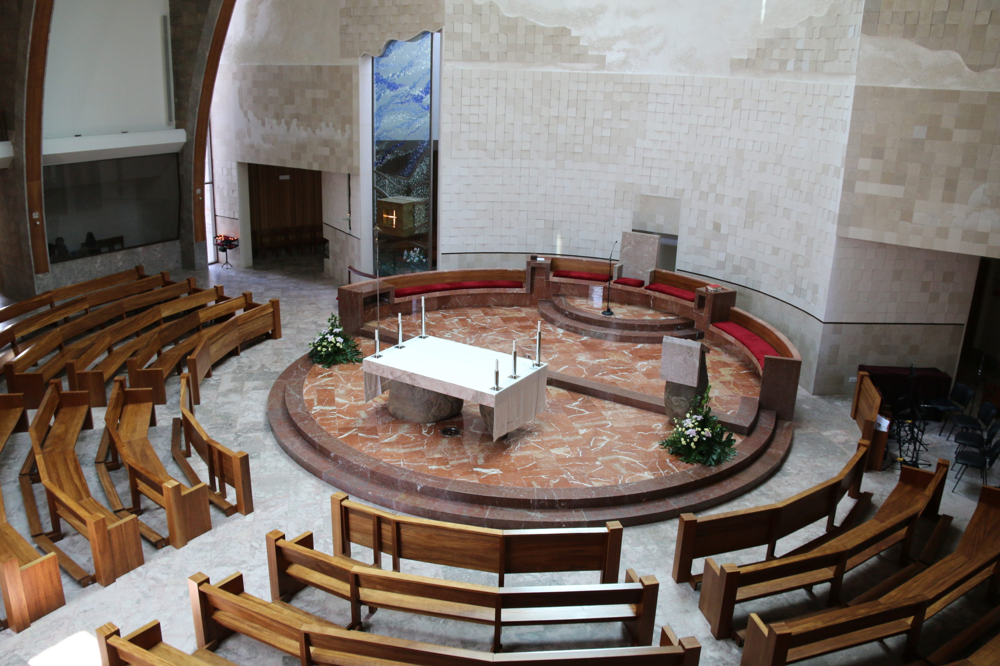

Sacramentos
Informação para preparar o batismo, o matrimónio e a participação na Eucaristia.
Batismo ↗ Matrimónio ↗FÉ · ENCONTRO · COMUNIDADE
No coração do Parque das Nações, um lugar para celebrar a fé, encontrar o outro e caminhar em comunidade.
LISBOA / PARQUE DAS NAÇÕES

Um lugar de fé. Um lugar para todos.CELEBRAR EM COMUNIDADE
Encontre os horários habituais das celebrações e prepare a sua visita.
Horários em revisão pela paróquia. Confirme as exceções antes da visita.
Segundo o corpo da página atual: 13h10 nos dias úteis e 12h30 ao domingo não se realizam em julho e agosto; 19h nos dias úteis e ao sábado, e 10h ao sábado, não se realizam em agosto. Em agosto: domingo e 15 de agosto às 11h e 20h. Confissões indicadas no rodapé: terça, quarta e sexta, 17h45–18h45; quinta, 19h30–20h. Confirmar todas estas informações com a secretaria.
VIVER A FÉ
Da oração à formação, da celebração ao cuidado pelo próximo. Descubra o seu lugar na vida da comunidade.
Informação para preparar o batismo, o matrimónio e a participação na Eucaristia.
Batismo ↗ Matrimónio ↗Conheça a catequese e os espaços de oração da paróquia.
Catequese ↗ Oração ↗Conheça a ação da comunidade no cuidado pelo próximo.
Conhecer a ação paroquial ↗Encontre informação prática nas páginas de cada área.
A VIDA QUE NOS REÚNE
Um espaço claro para encontrar celebrações, encontros e iniciativas.
DEMONSTRAÇÃO · Eventos fictícios. Datas fixas para apreciação do website.
18/10/2026 · 11:00
Local a confirmar
Evento fictício para experimentar a apresentação da agenda. Não corresponde a programação real.
Ver detalhes →20/10/2026 · 18:00
Local a confirmar
Evento fictício para experimentar a apresentação da agenda. Não corresponde a programação real.
Ver detalhes →23/10/2026 · 19:00
Local a confirmar
Evento fictício para experimentar a apresentação da agenda. Não corresponde a programação real.
Ver detalhes →ESTAMOS PERTO
Passeio do Levante, n.º 6
1990-503 Lisboa
Acesso indicado no website atual:
Passeio dos Heróis do Mar, Parque das Nações (Norte).
Horário publicado: dias úteis,
10h–13h e 14h30–20h.
Confirmar antes da visita.